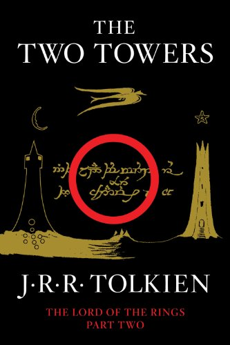

The Two Towers (Book 2)
Synopsis
The Fellowship is scattered. Some are bracing hopelessly for war against the ancient evil of Sauron. Some are contending with the treachery of the wizard Saruman. Only Frodo and Sam are left to take the accursed One Ring, ruler of all the Rings of Power, to be destroyed in Mordor, the dark realm where Sauron is supreme. Their guide is Gollum, deceitful and lust-filled, slave to the corruption of the Ring.
Download PDF- 01 - The Departure of Boromir
- 02 - The Riders of Rohan
- 03 - The Uruk-Hai
- 04 - Treebeard
- 05 - The White Rider
- 06 - The King of the Golden Hall
- 07 - Helms Deep
- 08 - The Road To Isengard
- 09 - Flotsam & Jetsam
- 10 - The Voice of Saruman
- 11 - The Palantír
- 12 - The Taming of Smeagol
- 13 - The Passage of the Marshes
- 14 - The Black Gate Is Closed
- 15 - Of Herbs and Stewed Rabbit
- 16 - The Window on the West
- 17 - The Forbidden Pool
- 18 - Journey To The Cross-Roads
- 19 - The Stairs of Cirith Ungol
- 20 - Shelob's Lair
- 21 - The Choices of Master Samwise